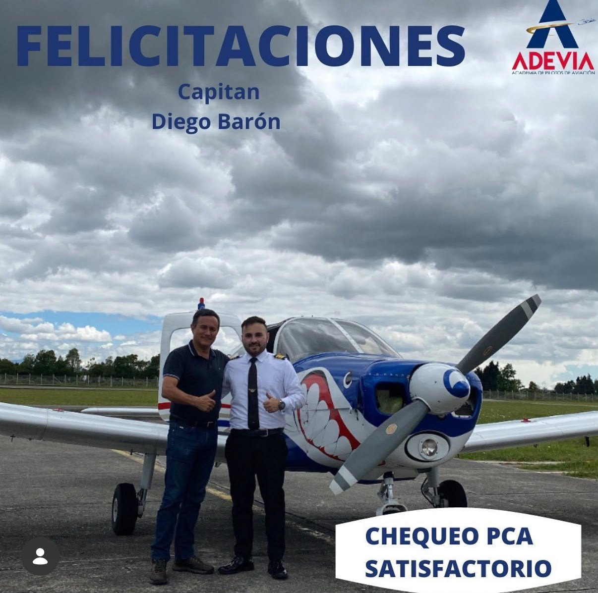

Fútbol
El deporte forma parte de mi día a día. Soy hincha del Real Madrid y de Millonarios FC, y disfruto jugar fútbol.
Soy Diego Fernando Baron Fajardo. Vivo en Bogotá, estudio Ingeniería de Sistemas, soy piloto comercial y disfruto construir una vida donde el trabajo, el deporte y los viajes se complementen.

Mi interés por la tecnología nació de las ganas de entender cómo funcionan las cosas y de crear soluciones útiles. Esa curiosidad me llevó a estudiar Ingeniería de Sistemas en la Universidad Libre.
Pero mi historia no se limita a la programación. He estudiado aviación en Aeroandes y Adevia, trabajado en soporte técnico y avanzado hacia el emprendimiento con BADICELL. Cada experiencia me ha enseñado a asumir retos con disciplina y creatividad.
Conocer otros lugares me ha dado nuevas perspectivas, desde estudiar inglés en Australia hasta descubrir ciudades de Asia y Estados Unidos.
El deporte forma parte de mi día a día. Soy hincha del Real Madrid y de Millonarios FC, y disfruto jugar fútbol.
Me encanta seguir la velocidad, la estrategia y la precisión de la F1. Mi piloto favorito es Max Verstappen.
Me interesan la inteligencia artificial, la programación, la ciberseguridad, la electrónica y la innovación.
Mi formación como piloto, mi experiencia laboral y los proyectos que he empezado fuera de la universidad.

Mi formación en Aeroandes y Adevia y lo que la aviación me ha enseñado.
Leer historia ↗
Mi recorrido como agente y supervisor, y el comienzo de mi tienda de celulares.
Leer historia ↗
Construir una empresa, visitar el Santiago Bernabéu y recorrer Europa y Asia.
Leer historia ↗Me ilusiona seguir creciendo en tecnología, abrirme camino con proyectos propios y mantener viva esa curiosidad que siempre me empuja a ir más lejos. Sueño con caminar por ciudades de Europa y Asia, dejarme sorprender por sus historias y sus culturas y, como hincha del Real Madrid, vivir algún día la emoción de entrar al Santiago Bernabéu y sentir de cerca todo lo que representa.
Leer mis metas ↗